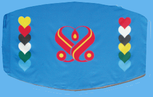

La famille
Quan Yin
|
Le Maître a
personnellement conçu ce superbe drapeau plein de sens pour
être utilisé par notre groupe. Elle a aussi
expliqué la signification des couleurs de chaque coeur :
|

|
Jaune
: Les peuples à la peau jaune
Rouge : Les peuples à la peau
rouge
Noir : Les peuples à la peau
noire
Blanc : Les peuples à la peau
blanche
Vert : La nature, les animaux,les
oiseaux, etc.
Bleu : L’eau et les êtres
aquatiques
La forme : La Terre
Le fond : Le ciel
|
Le logo SM sur le drapeau est
là pour éveiller la nature divine
dormante en nous, et pour nous souvenir de développer notre
héritage
lumineux intérieur. De chaque côté, des coeurs de
différentes couleurs
sont placés d’une manière interconnectée pour
symboliser les attentes
de Dieu envers tous les êtres vivants sur Terre : abandonnez toute
discrimination; tous les êtres vivants devraient s’aimer et
prendre soin
les uns des autres, et vivre en paix et dans la joie sous le ciel bleu.
|